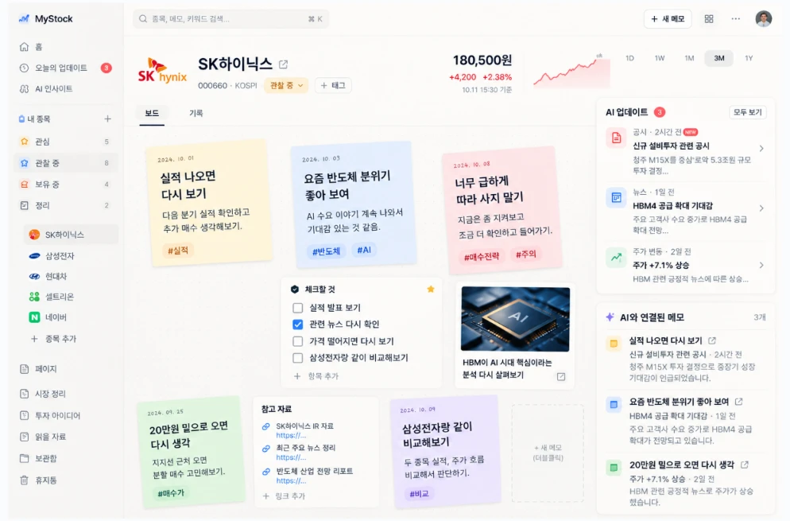

개인투자자의 종목 정보 관리 방식을 알아보기 위한 설문입니다. 응답은 신한 스퀘어브릿지 창업 공모전 준비를 위한 통계 분석에만 사용되며, 개인을 식별할 수 있는 정보는 수집하지 않습니다. 정답은 없으니 편하게 응답해 주세요.
여러 개 선택할 수 있어요. 다 고르면 ‘다음’을 눌러 주세요.
1점 전혀 그렇지 않다 · 3점 보통 · 5점 매우 그렇다

여러 개 선택할 수 있어요.
최대 2개까지 선택할 수 있어요.
비워 두고 넘어가도 괜찮아요.
보내 주신 응답은 MEMO'S를 만드는 데 소중하게 쓰겠습니다.